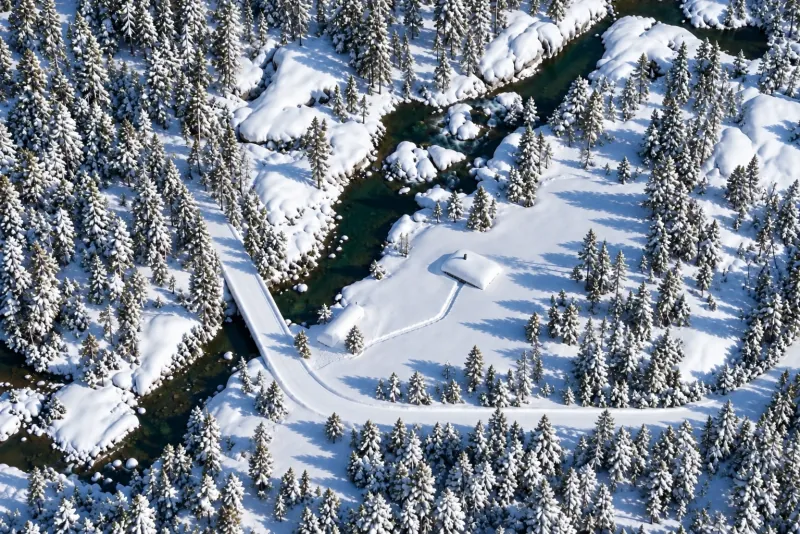

- Bunk beds and a sleeping loft
- A big carved table, a kitchen with a gas stove, a fridge and a microwave
- A living room with a wood stove, a big sofa and foosball
- Two decks with tables, benches and grills
- A bathroom inside the cabin
- Power from solar panels and a generator

Placer County, California · I-80, Exit 168
Feel reborn.A wood-fired sauna by a mountain river, 168 acres of forest around it, and no one there but you.
The whole place for a group of up to 10: $500 for a day, $1,000 for 24 hours. An hour and a half from Sacramento.
The cabin and the sauna sit
in the same clearing by the river
Around them are 168 acres of pine forest, four parcels behind a private gate. It's about 5,700 feet up, so in summer it's cooler here than in Sacramento.


Tap or click a label to open the photoIllustrations based on a satellite image and photos of the property
Like your own cabin
in the mountains,
for a day or 24 hours
Nobody lives here and there's no staff. For that time the cabin, the sauna, the river and the forest are yours alone: you come with your own group and run things yourselves.


The sauna is right by the river
- A wood-burning stove
- You light the stove
- The stones heat up while you unpack
- You sit in the heat on two tiers of benches
- Then down the steps into the river
The river is the South Yuba, cold snowmelt water. People swim in the pool from mid-July through October. In winter it's a quick dip and straight back into the sauna, if the river is calm that day.
How it works
Arrival
In summer and fall you drive right up to the cabin. In winter you leave the car by the road at the gate and walk the last two-thirds of a mile on snowshoes: nobody plows the snow here.
While you're here
The cabin and the sauna are clean and the firewood is stacked. You light the stoves in the sauna and the living room yourselves.
Before you leave
Clean up after yourselves and take your trash with you.
The key
Lock the cabin and leave the key where we tell you. We return the deposit in full. If we have to clean up or fix something after you, that comes out of the deposit.
What to bring
- Food and drinks
- For the whole group. The nearest big grocery store is in Truckee, twenty minutes by car. Keep food and anything that smells inside the cabin and don't leave it in the car overnight: there are bears here.
- Sheets and towels
- There are no bed sheets or towels here, so bring your own.
- Water
- Ask us before the trip whether there's drinking water here.
A cabin that sleeps 12
In winter the snow can reach the roof
Interstate 80, Exit 168.
The sign says Rainbow Road.
Sierra Nevada, between Cisco Grove and Kingvale, about ten miles below Donner Summit.
Close by
- Loch Leven Lakes trail
- 1 mile
- Gas, Cisco Grove
- Exit 165
- Gas, Kingvale
- Exit 171
- Groceries
- Truckee
- Pacific Crest Trail
- 15 min
- Ski areas
- 7 to 10 miles

Exit 168 · Rainbow Road
From the exit to the gate is a couple of minutes. The drive times on the map are for a dry road with no traffic.
What else to do
on 168 acres
You book the cabin and the sauna, but the forest and the river around them are yours too. Write what you have in mind in the notes when you book, and we'll tell you if it works.
- Fishing
- There are brown and rainbow trout in the South Yuba. Trout season in California runs from late April to mid-November, and from age 16 you need a fishing license.
- Hiking
- The Loch Leven Lakes trail starts a mile from the exit: three and a half miles uphill to granite lakes. The Pacific Crest Trail crosses I-80 at Donner Summit, fifteen minutes east.
- Dirt bikes and quads
- There's room to ride on 168 acres of private land, and a paved area by the cabin to unload. We'll agree on where to ride beforehand. California requires a spark arrester on forest land and Placer County limits noise, so bring quiet exhausts.
- Motorcycle touring
- I-80 over Donner Summit and Highway 49 through Gold Country are close by. You park the bikes right by the cabin and warm up in the sauna after a cold pass.
- Camping
- Tents, vans and RVs can go on the land, by arrangement. Public campgrounds in the mountains book up months ahead, and here there'll be no one but your group.
The whole place,
for your group
$500Day visit
$1,00024 hours
If there are ten of you, that's $50 a person for a day and $100 for 24 hours
- The price is for the whole place and a group of up to 10
- More than 10 people: we agree separately
- The whole property for a month or longer: we agree separately
- Same price on holidays
Questions
How many people can come?
Up to 15. The price is for the whole place, not per person: up to 10 people, $500 for a day and $1,000 for 24 hours; 11 to 15 people, $750 and $1,500.
Can we rent it for a month?
Yes, the whole property, for a month or longer. We agree on the price and terms separately: message us on Facebook.
Do I need a 4WD or chains?
Not in summer and fall: the road is paved from the gate to the cabin. In winter you can't drive past the gate, and on I-80 chain controls start at Kingvale, a few miles east.
Is there phone signal or Wi-Fi?
Don't count on either. Coverage nearby is patchy; people say AT&T works best. Before you drive up, leave the address and your plans with someone.
Is the river safe for kids?
It's a mountain river: the water is ice-cold, and there's current under the calm surface. In spring runoff, from May to early July, it's dangerous and nobody swims. In summer the pool below the deck is quiet, but kids need life jackets.
Can we make a fire?
Yes, outside fire season. From late June to October open campfires are banned here and across the Sierra. Then you still have the sauna stove, the wood stove in the living room and the grills on the deck.
Can you hear the freeway?
The exit is a couple of minutes away, so at the gate you can. How much reaches the cabin and the water depends on the wind and the river.
How does booking work?
Pick your dates in the form below and send it: we hold the dates for 24 hours and message you where to send the deposit. The dates are yours once the deposit is paid; it equals the rent. The rent itself is due three days before you arrive. Both go by Zelle. You can also just message us on Facebook.
Can we cancel?
If you book more than 14 days ahead, you have 7 days to change your mind and get the deposit back. After that, or if you book 14 days ahead or less, the deposit isn't refundable.
Pick your dates
Rather use Facebook?
Message the Exit 168 page on Facebook about dates or anything else. We answer there too.
Message us on Facebook